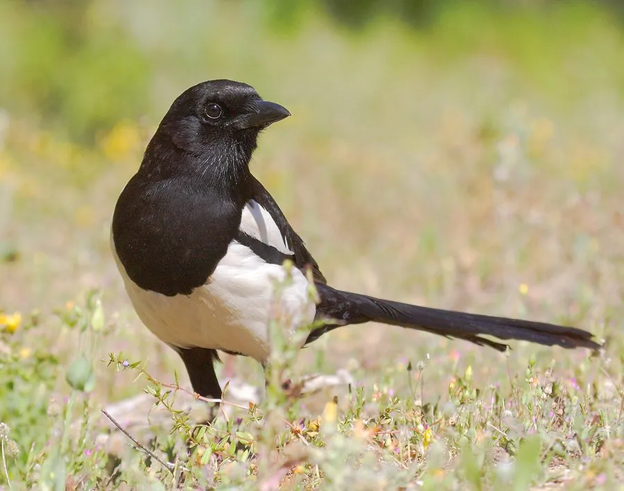

鸟类 · 动物界
喜鹊 Pica pica

黑白分明、尾羽修长的常见鸦科鸟类，喜欢在树上筑起巨大的圆顶巢，在中国民间被视为报喜的吉祥鸟。
- 分类
- 门脊索动物门纲鸟纲目雀形目科鸦科属鹊属
- 栖息环境
- 农田、村庄、城市公园、草原和疏林，适应多种环境
- 地理分布
- 欧亚大陆广泛分布，中国各地从平原到低山都常见，多为留鸟
- 保护级别
- IUCN 无危（LC）；中国“三有”保护动物
物种志
喜鹊体长 44–50 cm，翼展 52–60 cm，体重 160–240 g。头部、颈部和背部为黑色，在阳光下泛出蓝绿金属光泽，肩部和腹部洁白，翅膀末端有白斑，尾羽修长呈楔形，飞行时黑白分明。它的喙粗壮有力，脚爪强健，常在地面和树枝间跳跃觅食。
喜鹊广泛分布于欧亚大陆，中国从平原到低山都常见，多为留鸟。它们栖息在农田、村庄、城市公园、草原和疏林，食性很杂，吃昆虫、谷物、浆果和腐肉，也会取食其他鸟类的卵和雏鸟。喜鹊实行一夫一妻制，每年 3–4 月在树上筑起巨大的穹顶状巢，侧面留出入口，用带刺树枝搭建以防天敌，每窝产卵 5–8 枚，孵化 17–18 天。作为鸦科成员，喜鹊聪明而好奇，是少数能通过镜子测试、识别自我的鸟类之一。
形态与习性
- 食性昆虫、谷物、浆果、腐肉，也会取食其他鸟类的卵和雏鸟
- 体长44–50 cm
- 翼展52–60 cm
- 体重160–240 g
- 繁殖穹顶状巢带侧门，每窝 5–8 枚卵，孵化 17–18 天
- 筑巢每年 3–4 月筑新巢，也会在旧巢上加固
- 寿命野外约 5–8 年
趣味知识
- 喜鹊的巢呈穹顶状，侧面留出入口，用带刺树枝搭建，可防天敌入侵。
- 它是少数能通过镜子测试的鸟类之一，具有识别自我的能力。
- 中国民间把喜鹊视为报喜的吉祥鸟，“鹊登梅枝”是年画中的常见题材。
- 喜鹊属于鸦科，和乌鸦是近亲，同样以聪明和好奇心著称。